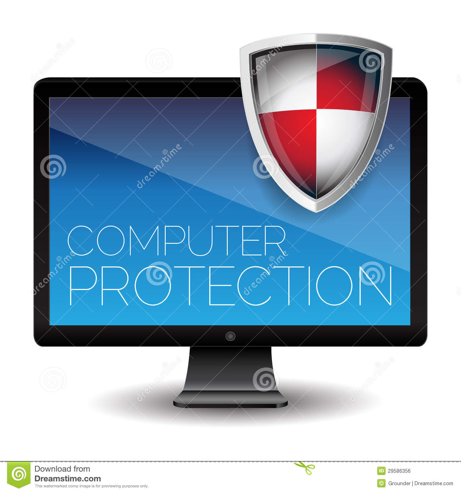
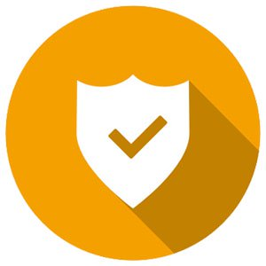
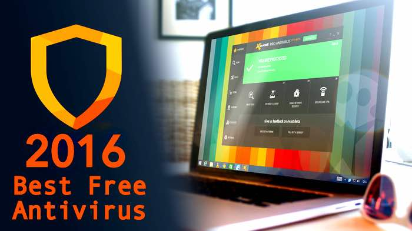
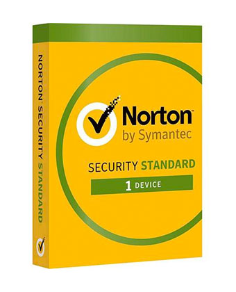
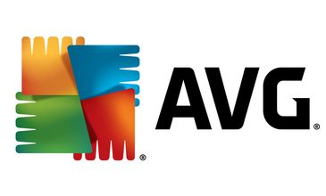

Protection of your Computer -:
Computer that you use at home or at school are vunerable to threads likes worms , viruses , Trojan Horses
and hacking attacks . These could have various types of negetive impact on the confidentiality of information
on your computer or even impact the availability of the computer when you want to use it .
Follow these simple yet effective practices to guard your computer against these and various other threads .


1. Keep your systems free of Vulnerabilities :
Manufacturers of operating systems continuously work to keep their software patched against all known
vulnerabilities that have been identified . So ,if you are using genuine licence Operating System (OS) which
is set to automatically update patches , the Operating System will stay free of vulnerabilities that can be
exploited by hackers or malicious programs .


2. Install Anti Virus Software :
Install an effective anti-virus software and ensure that it is set to download update automatically . This
will ensure that the Anti-Virus Software will be able to protect your computer as it will have the latest
fixes to new viruses , worms , and Trojan horses . Since most of you use emails and often download
attachments , you must ensure that the Anti-Viruses program is set to scan e-mail and files as they are
downloaded from the Internet . A number of free but effective Anti-Virus software are also available for
individual use .
Some Anti Virus You Can Install -:




3. Run Virus Scan Periodically :
It is a good practise to run full disk anti virus scans to detect malicious programs that may not have
been picked up prior to an update on the antivirus system .
4. Use a Firewall :
A firewall is a system designed to prevent unauthorized use of and access to your computer . a firewall
can be either hardware or software . Most individuals users prefer a software firewall . If you are using
Windows , you can use the built-in Windows firewall .


 Cyber Threads
Personal Information
Social Engineering
Cookies
Cyber Safety
Cyber Threads
Personal Information
Social Engineering
Cookies
Cyber Safety